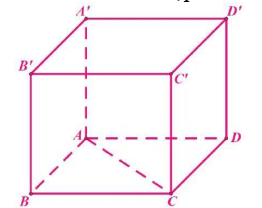
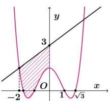
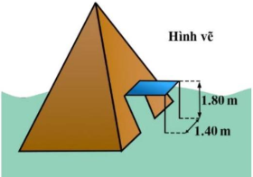
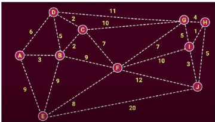
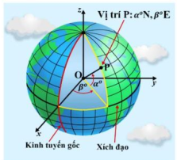

Để kiểm tra vuông góc, xét tích vô hướng của vector cạnh với vector pháp tuyến của mặt phẳng.
Câu 1. Cho hình chóp \( S.ABCD \) có đáy là hình bình hành tâm \( O \), \( SA = SC \), \( SB = SD \). Trong các khẳng định sau, khẳng định nào đúng:
Phương trình mặt cầu: \( x^2 + y^2 + z^2 + 2ax + 2by + 2cz + d = 0 \), tâm \( I(-a; -b; -c) \).
Câu 2. Trong không gian \( Oxyz \), cho mặt cầu \( (S): x^2 + y^2 + z^2 - 2x - 2y + 4z = 0 \). Tọa độ tâm \( I \) của mặt cầu đó là:
Thể tích hình chóp: \( V = \frac{1}{3}S_{\text{đáy}} \cdot h \). Khoảng cách: \( h = \frac{3V}{S_{\text{đáy}}} \).
Câu 3. Cho hình chóp \( S.ABC \) có thể tích \( V = 1 \), tam giác \( ABC \) vuông cân tại \( A \) có \( BC = 1 \). Khoảng cách từ \( S \) tới mặt phẳng \( (ABC) \) bằng:
Diện tích: \( S = \int_a^b |f(x) - g(x)| \, dx \).
Câu 4. Tính diện tích hình phẳng giới hạn bởi đồ thị hàm số \( y = 2x - 2 \), \( y = 4 \) và trục tung:
Tổng vector: \( \vec{u} + \vec{v} \). Khoảng cách là độ dài vector kết quả.
Câu 5. Cho hình hộp \( ABCD.A'B'C'D' \), khi đó tổng khoảng cách từ vector \( \overrightarrow{AA'} + \overrightarrow{AC'} \) là:
Giá trị lớn nhất của hàm số đạt tại điểm cực trị hoặc điểm biên.
Câu 6. Giá trị lớn nhất của hàm số \( y = -x^2 - x^{2026} - 22 \) là:
Điểm cực trị thỏa mãn \( y' = 0 \). Giá trị hàm số tại điểm bất kỳ được tính bằng cách thay vào hàm.
Câu 7. Biết \( M(0; 2) \) và \( N(2; -2) \) là các điểm cực trị của đồ thị hàm số \( y = ax^3 + bx^2 + cx + d \). Tính giá trị của hàm số tại \( x = -2 \):
Hàm \( y = \log_b (f(x)) \) xác định khi \( f(x) > 0 \) với mọi \( x \).
Câu 8. Tìm \( m \) để hàm số \( y = \log_2 (\sin x + m) \) xác định với mọi \( x \in \mathbb{R} \):
Tọa độ điểm được xác định dựa trên vị trí các điểm trên trục tọa độ.
Câu 9. Trong không gian, cho hình hộp chữ nhật \( ABCD \). \( A'B'C'D' \) là hình vuông với \( AB = 3 \), \( AD = 5 \), \( A'A' = 7 \). Chọn hình trụ tròn tọa độ \( Oxyz \) có \( O \) trùng với \( A \), các điểm \( B, D, A' \) lần lượt thuộc các trục \( Ox, Oy, Oz \). Tọa độ của \( C' \) là:
Vector \( \overrightarrow{AM} = k \overrightarrow{AN} \) suy ra quỹ tích điểm \( N \).
Câu 10. Trong không gian \( Oxyz \), cho hai điểm \( A(1; 2; 3) \), \( M(2 + a; 1 - a; 3) \). Biểu trưng diện \( N \) thỏa mãn \( \overrightarrow{AM} = 2\overrightarrow{AN} \), tìm điều kiện để diện \( N \) là:
Sử dụng tính chất: \( \log_a b = \frac{\log_c b}{\log_c a} \), và giải hệ phương trình.
Câu 11. Cho các số thực \( a, b \) khác 1 thỏa mãn \( \log_2 a = \log_b 16 \) và \( ab = 64 \). Giá trị của biểu thức \( \left(\log_b \frac{a}{b}\right)^2 \) bằng:
Hàm có đạo hàm trên \( \mathbb{R} \): Đạo hàm trái và phải tại điểm nối bằng nhau.
Câu 12. Cho hàm số \( f(x)=\left\{\begin{array}{ll}x^2+x+a & \text{khi } x \geq 0 \\ 2+b x & \text{khi } x<0\end{array}\right. \) có đạo hàm trên \( \mathbb{R} \) (với \( a, b \) là các tham số thực). Nếu \( \int_{-1}^{1} f(x) \mathrm{d} x=\frac{m}{n} \) với \( m, n \in \mathbb{Z}^{+} \) thì \( m+2n \) bằng:
Hàm chi phí: \( C(x) = \frac{2x+1}{1-\frac{x}{100}} \). Kiểm tra giá trị tại \( x \) cụ thể.
Câu 13. Một nhà máy sản xuất thuốc nhuộm hoạt động tại khu vực gần một dòng sông lớn. Trong quá trình sản xuất, nhà máy thải ra một lượng chất ô nhiễm đáng kể vào môi trường, gây ảnh hưởng nghiêm trọng đến chất lượng nước và sức khỏe cộng đồng. Để cải thiện tình hình và tuân thủ các quy định về bảo vệ môi trường, nhà máy đã quyết định đầu tư vào một hệ thống xử lý nước thải hiện đại. Chi phí để loại bỏ \( x \) chất ô nhiễm từ nguồn nước thải được mô hình hóa bởi hàm số phân thức sau: \( C(x)=\frac{2x+1}{1-\frac{x}{100}} \) (triệu đồng), \( 0 \leq x < 100 \):
Câu 14. Cho hàm số \( f(x) = ax^4 + bx^2 + c \) (với \( a, b, c \in \mathbb{R} \), \( a \neq 0 \)) có đồ thị như hình vẽ, đường thẳng \( d \) đi qua điểm \( (0; 3) \) cắt đồ thị \( f(x) \) tại hai điểm nhánh bên. Biết đường điêm nhánh bên. Biết rằng diện tích miền giới hạn bởi \( f(x) \) và đường thẳng \( d \) là \( \frac{109}{30} \). Chọn Đúng hoặc Sai cho từng phát biểu sau:
Xác suất có điều kiện: \( P(A|B) = \frac{P(A \cap B)}{P(B)} \).
Câu 15. Gieo hai con xúc xắc đúng 1 lần. Gọi \( A \) là biến cố: "tổng số chấm xuất hiện ở cả hai con xúc xắc là số nguyên tố"; \( B \) là biến cố: "tổng số chấm xuất hiện ở cả hai con xúc xắc là số lẻ":
Câu 16. Một cái lều kin, được dựng trên một mặt phẳng ngang, có hình dạng một kim tự tháp vỏi đáy là hình vuông. Các cạnh bên của lều đều bằng nhau và được tạo thành bởi các bản thàn chông. Lều cao 6 mét và cạnh đáy của lều là 5 mét. Lều được mô hình hóa trong một hệ tọa độ Oxy với mặt phẳng đáy của lều nằm trong mặt phẳng \( S(2,5; 2,5; 6) \). Điểm A nằm tại gốc tọa độ. Điểm B nằm trên trục Ox và điểm D nằm trên trục Oy. Môt đỉnh vĩ đai trong hệ tọa độ được tính trong suốt tế. Chọn Đúng hoặc Sai cho từng phát biểu sau:
Thể tích: \( V = \frac{1}{3}S_{\text{đáy}} \cdot h \). Cosin góc: \( \cos \theta = \frac{\vec{u} \cdot \vec{v}}{|\vec{u}| |\vec{v}|} \).
Câu 17. Cho hình chóp đều \( S.ABCD \) có tất cả các cạnh bằng 1, gọi \( M \) là một điểm nằm trên cạnh \( BC \) sao cho cosin của góc tạo bởi đường thẳng \( SA \) và \( DM \) bằng \( \frac{\sqrt{5}}{10} \). Tính thể tích của khối chóp \( S.ADCM \)? (Kết quả làm tròn đến hàng phần trăm):
OSPF và IS-IS tối ưu hóa đường đi dựa trên trọng số.
Câu 18. Các hệ thống internet doanh nghiệp hay sử dụng giao thức định tuyến mạng như OSPF (Open Shortest Path First) và IS-IS (Intermediate System to Intermediate System), giúp các thiết bị mạng tính toán đường đi ngắn nhất (theo trọng số) từ máy tính nguồn là máy \( A \) đến tất cả các máy còn lại để tối ưu hóa việc sử dụng tài nguyên:
Giá trị nhỏ nhất của \( y = |x - a| + k \) đạt tại \( x = a \).
Câu 19. Có bao nhiêu giá trị nguyên của \( a \) để giá trị nhỏ nhất của hàm số \( y=|x-a|+22 \) trên đoạn \( [-5; 5] \) bằng 22?:
Giá trị trung bình: \( \frac{1}{b-a} \int_a^b f(x) \, dx \).
Câu 20. Nhân dịp 20/11, bạn Minh tổ chức show âm nhạc với 140 bạn học sinh tham dự. Các anh chị trợ giảng đã thống kê lại được số lượng học sinh ở lại coi thầy Đức hát, được biểu diễn qua hàm \( f(t)=\left\{\begin{array}{l}140-25t, 0 \leq t \leq 2 \\ -10(t-2)^2+90, t>2\end{array}\right. \) (học sinh), với \( t \) là số giờ trôi qua. Hỏi từ lúc bắt đầu cho đến khi học sinh ra về hết, trung bình mỗi giờ có còn lại bao nhiêu học sinh ở lại nghe thầy Đức hát?:
Kinh độ và vĩ độ trên Trái Đất, khoảng cách trên bề mặt cầu.
Câu 21. Trong mô hình toán học, bề mặt Trái Đất là mặt cầu với bán kính 6371 km (theo: science.nasa.gov/earth/facts/). Mỗi kinh tuyến là một nửa đường tròn có đường kính là đường xích đạo. Kinh tuyến gốc là kinh tuyến đi qua Đại Thiên văn Greenwich ở London. Mặt phẳng chứa kinh tuyến gốc chia Trái Đất làm hai nửa là bán cầu Đông và bán cầu Tây, tương ứng nằm ở bên phải và bên trái kinh tuyến gốc. Kinh độ của một điểm \( P \) trên bề mặt Trái Đất là số độ góc giữa kinh tuyến đi qua \( P \) (cạnh của góc nhọn này nằm trên đường tròn lớn chứa \( P \)) và kinh tuyến gốc. Vĩ độ của điểm \( P \) là số độ góc giữa mặt phẳng chứa đường xích đạo và đường thẳng đi qua \( P \) và tâm \( O \) của Trái Đất. Vĩ độ này nằm trong khoảng từ 0° đến 90°. Mọi điểm trên bề mặt Trái Đất thuộc một trong hai bán cầu Bắc hoặc Nam tùy thuộc vào vĩ độ. Biết một vị trí ở Hà Nội có tọa độ là \( 21^\circ N, 106^\circ E \) và một vị trí ở Los Angeles ở Mỹ có tọa độ là \( 31^\circ N, 118^\circ W \). Khoảng cách trên mặt đất của hai vị trí này là bao nhiêu km (làm tròn đến số nguyên)?
Xác suất ít nhất 1 lần: \( P = 1 - P(\text{không xảy ra}) \).
Câu 22.Trong một buổi diễn nghệ thuật, một nhà ảo thuật có khả năng xuất hiện ở sân khấu với xác suất 0,4. Nếu nhà ảo thuật không xuất hiện ở sân khấu chính, họ sẽ xuất hiện ở trên hàng ghế khán giả. Để ghi lại buổi diễn, ban tổ chức đã chuẩn bị hai camera đặt ở hai vị trí: sân khấu chính và hàng ghế khán giả. Khi nhà ảo thuật xuất hiện ở sân khấu chính hoặc hàng ghế khán giả, các camera sẽ tự động kích hoạt để ghi hình. Nếu nhà ảo thuật không xuất hiện ở sân khấu chính, các camera sẽ không hoạt động. Mỗi camera có xác suất ghi hình thành công là 0,8, và xác suất không ghi lại thành công là 0,2. Nếu nhà ảo thuật xuất hiện ở hàng ghế khán giả, các camera sẽ hoạt động. Mỗi camera có xác suất ghi hình thành công là 0,9. Nếu không có camera nào ghi lại được hình ảnh, ban tổ chức sẽ coi buổi diễn là thất bại. Tính xác suất để buổi diễn thành công (làm tròn kết quả đến hàng phần trăm).
Nhập họ và tên: